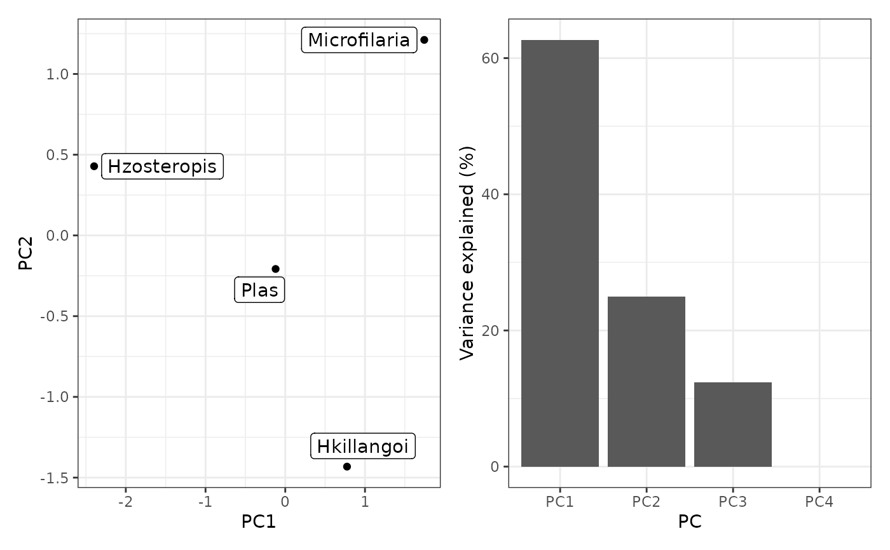

Principal Component Analysis of mrIML variable importance
Arguments
- mrVip_obj
A list returned by
mrVip().
Value
A list of PCA results:
$PCA_plot: Side-by-side plots of the different response models on the first two principal components (PCs) and a Scree plot.$PC_outliers: A list of the models flagged as outliers on at least one of the PCs.$eigenvalues: The eigenvalues associated with the principal components.$PC_scores: The PC scores of each response model.
Examples
library(tidymodels)
# Without bootstrap
data <- MRFcov::Bird.parasites
Y <- data %>%
select(-scale.prop.zos) %>%
select(order(everything()))
X <- data %>%
select(scale.prop.zos)
model_rf <- rand_forest(
trees = 10, # 10 trees are set for brevity. Aim to start with 1000
mode = "classification",
mtry = tune(),
min_n = tune()
) %>%
set_engine("randomForest")
mrIML_rf <- mrIMLpredicts(
X = X,
Y = Y,
X1 = Y,
Model = model_rf,
prop = 0.7,
k = 2,
racing = FALSE
)
#>
|
| | 0%
|
|================== | 25%
|
|=================================== | 50%
|
|==================================================== | 75%
|
|======================================================================| 100%
#> i Creating pre-processing data to finalize unknown parameter: mtry
#> i Creating pre-processing data to finalize unknown parameter: mtry
#> i Creating pre-processing data to finalize unknown parameter: mtry
#> i Creating pre-processing data to finalize unknown parameter: mtry
mrIML_rf_vip <- mrVip(mrIML_rf, taxa = "Plas")
mrIML_rf_vip %>%
mrVipPCA()
#> $PCA_plot

#>
#> $PC_outliers
#> $PC_outliers$PC1
#> integer(0)
#>
#> $PC_outliers$PC2
#> integer(0)
#>
#> $PC_outliers$PC3
#> [1] 4
#>
#> $PC_outliers$PC4
#> [1] 4
#>
#>
#> $eigenvalues
#> [1] 3.133804e+00 1.247946e+00 6.182499e-01 2.782706e-31
#>
#> $PC_scores
#> # A tibble: 4 × 5
#> PC1 PC2 PC3 PC4 response
#> <dbl> <dbl> <dbl> <dbl> <chr>
#> 1 0.775 -1.43 -0.507 -4.85e-16 Hkillangoi
#> 2 -2.40 0.429 -0.408 -5.61e-16 Hzosteropis
#> 3 1.74 1.21 -0.254 -1.11e-15 Microfilaria
#> 4 -0.121 -0.208 1.17 2.68e-15 Plas
#>